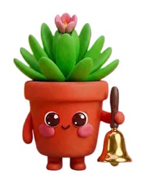
Call mom
DoneSnooze 10 min
Happy reminders
Type or just say “call mom at 6”. At 6, I ring my little bell. Meetings too, if you connect your Google Calendar.
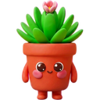
Companion Get itB.2.0 · Private beta for Mac
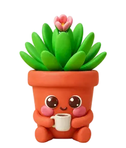
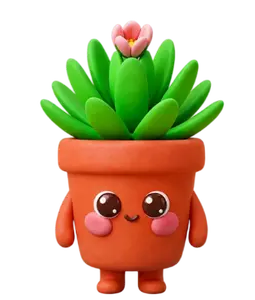
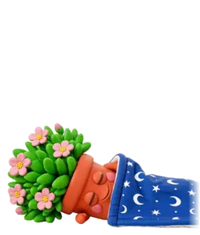
Get things done.
Look after yourself, too.
Meet the little plant that lives on your Mac. Keep small tasks close, take a one-minute breathing break together, and watch it grow as you care for yourself.
A gentler rhythm
Your plant stays nearby while you work. Click to open your tasks, move it to your favourite corner, and leave room for yourself in the day.

Call mom
Type or just say “call mom at 6”. At 6, I ring my little bell. Meetings too, if you connect your Google Calendar.
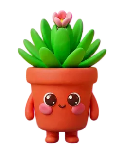
One thing at a time.
Write the first paragraph
Send the invoice
Call mom at 6
Keep your everyday to-dos in a simple list beside your plant. Tick one off and enjoy a little celebration. Tasks work offline too.
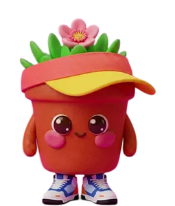
You've been at it a while. Stretch with me?
Every hour or so I ask you to move, and I stretch right along with you. You choose how often.
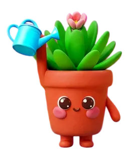
Water break! I'm watering myself. Your turn?
Forgot to drink water again? A little nudge to reach for your bottle. Choose your rhythm in Settings, or skip a break when it does not suit you.
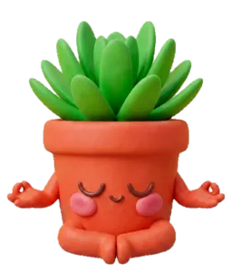
A minute just for you
Step out of the rush for a one-minute guided breathing break. Your plant settles into its meditation pose while a gentle voice guides you through each breath, with matching on-screen cues.
Follow at a comfortable pace, choose your own rhythm, or stop whenever you like. No AI chat, account or cloud connection needed for breathing breaks.
Bring a little calm to my MacOpen your plant’s menu and choose Breathe. Everyday relaxation, without breath-holding or clinical advice.
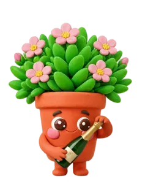
Report submitted! That was the big one today. So proud of you.
Tick off the big task and I pop the champagne. Small wins deserve a party too.
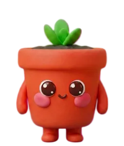
Stage 1 · tiny sprouts
Try it. What did you do today?
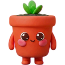
tiny sprouts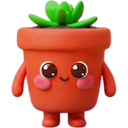
little leaves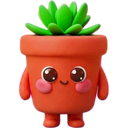
filling out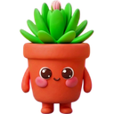
looking lush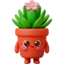
pink bloom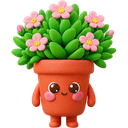
full bloomTomorrow I start small again. No streaks to break, no guilt.
Your AI friend
this task feels enormous
okay. we are NOT climbing the whole mountain at once. what’s one small part?
I could write the first sentence
YES. one sentence. a perfectly respectable beginning.
that feels doable
tiny steps still count. go get your sentence.
Find a small next step, take a breather or share the day’s gossip. Chat whenever you want some company.
Try an example reply. This preview does not use AI.
okay. one tiny step first. what are you trying to get started on?
Jokes
What do you call a fake noodle?
An impasta!
A silly little interruption when you want one. No AI chat needed.
Chill
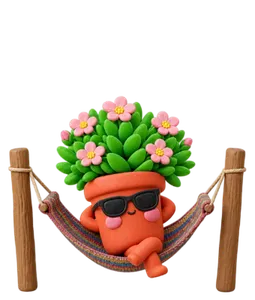
After a calm stretch, I kick back and swing. Click me and I'm right back.
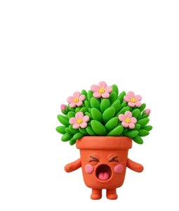
It's getting late. Time to wrap up and rest?
At your bedtime I get sleepy and gently nudge you to stop. Tomorrow we start fresh, tiny sprouts and all.
Your choice, in plain words
Your plant is here for tasks, care breaks and conversation. Only messages you send in chat start an AI request.
Before your first chat, we explain what is shared. Sending a message shares recent chat (up to 16 messages, including your new message) through our server with the AI provider. Local time helps set reminders. Your task list, saved memories and fetched calendar events are not added. Our server does not log conversations.
Your voice is turned into text on your Mac. If you send that text in AI chat, it is shared just like a typed message. Calendar events fetched from Google are not sent to the AI.
No ads or analytics. Deleting chat history stops the current reply; information already sent cannot be recalled. Research may share search terms with search services. Delete local app data in Settings; this does not erase provider records. Read the privacy details.
Friendly everyday support. No mental-health assessments, diagnoses or treatment advice.
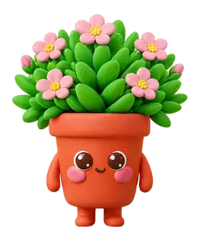
Your next task. Your next break. Your little companion. Free during the private beta.
Mac with an Apple chip (M1 or newer) · macOS 12 or later
This is an early beta, and your notes shape what I become. After a few days, a two-minute form helps the most.
Share feedback